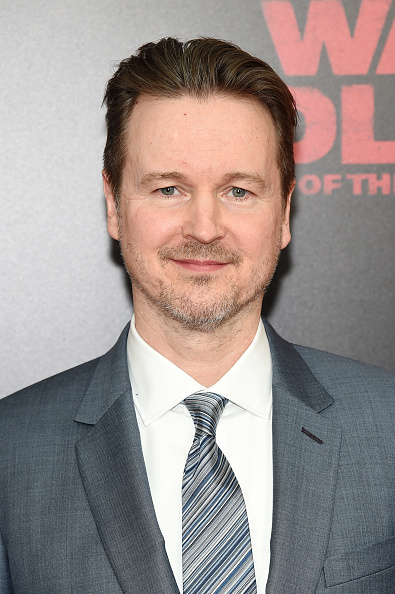
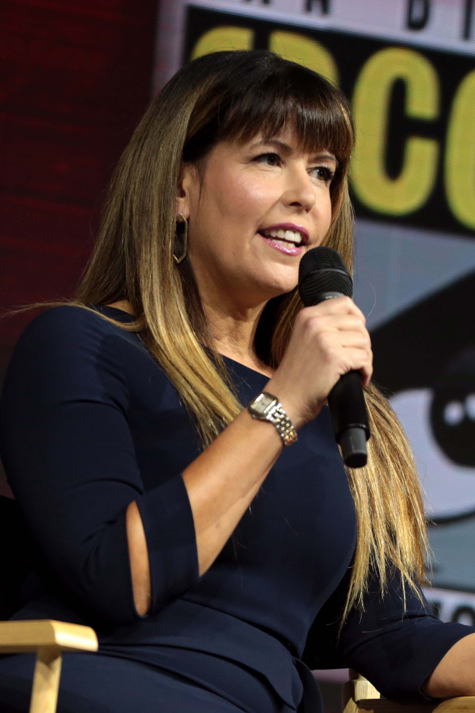
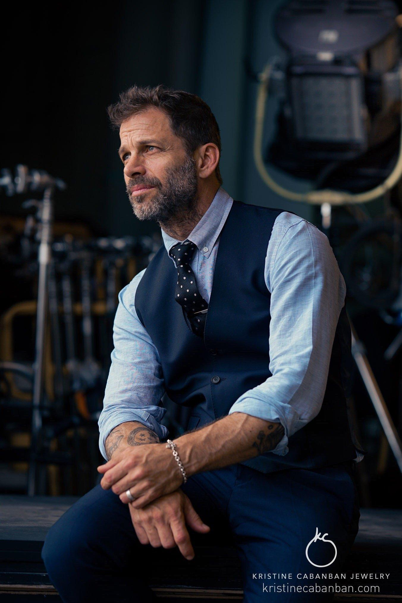

Estilo característico: Combinación única de humor, corazón y acción
Proyectos DC:
The Suicide Squad (2021) - Director
Peacemaker (2022) - Creador/Director
Superman: Legacy (2025) - Director/Guionista
Próximos proyectos: Liderando el nuevo DCU como co-CEO junto con Peter Safran
Matt Reeves

Universo: The Batman (Universo independiente)
Estilo característico: Cine noir, realismo, thriller psicológico
Proyectos DC:
The Batman (2022) - Director/Guionista/Productor
The Penguin (2024) - Productor Ejecutivo
The Batman Part II (2026) - Director/Guionista
Enfoque único: Reeves ha creado un universo de Batman más grounded y detective
Patty Jenkins

Contribución clave: Primera mujer en dirigir una película de superhéroes de gran presupuesto
Estilo característico: Épico, emocional, con enfoque en personajes
Proyectos DC:
Wonder Woman (2017) - Directora
Wonder Woman 1984 (2020) - Directora/Guionista
Logro histórico: Wonder Woman se convirtió en la película más taquillera dirigida por una mujer en su momento de estreno
James Wan
Especialidad: Horror y acción a gran escala
Estilo característico: Visualmente impresionante, secuencias de acción innovadoras
Proyectos DC:
Aquaman (2018) - Director
Aquaman and the Lost Kingdom (2023) - Director
Récord: Aquaman es la película de DC más taquillera de la historia con más de $1.14 billones a nivel mundial
Zack Snyder

Contribución: Arquitecto del DCEU original
Estilo característico: Visualmente distintivo, tono oscuro, mitológico
Proyectos DC:
Man of Steel (2013) - Director/Productor
Batman v Superman: Dawn of Justice (2016) - Director/Guionista
Zack Snyder's Justice League (2021) - Director/Guionista
Legado: Snyder estableció el tono visual y temático del DCEU inicial
Nueva Era DCU
Bajo el liderazgo de James Gunn y Peter Safran, el DCU se reorganiza con un plan cohesivo
que conecta películas, series, videojuegos y animación en una sola continuidad compartida.